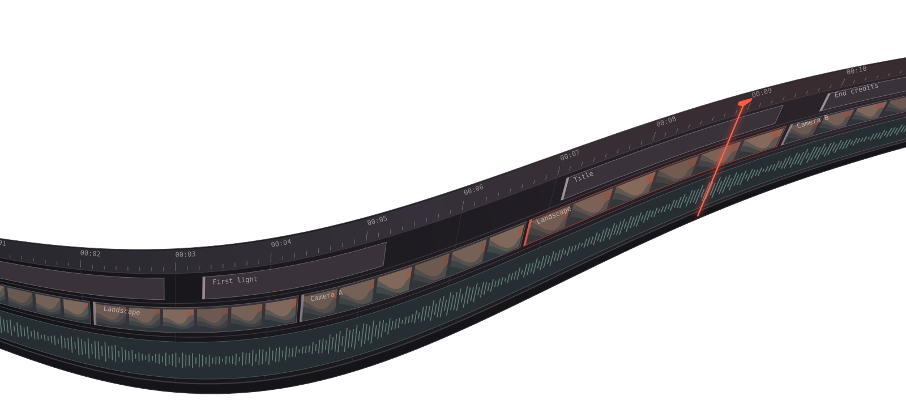

Shape the motion
Keyframe position, scale, rotation, and opacity on visual layers. Refine easing in the value graph and inspect motion in the speed graph.

The open-source CapCut alternative for Windows.
Scrub the footage or try an edit. The playhead, video, and clip tracks move together.
Connect a compatible AI provider and ask for a trim, a title change, or a keyframe edit in plain language. Review the changes on the same timeline and undo them when needed.
OpenKuro sends the project context needed for the edit. Your source footage stays on your machine.
“Split the landscape at 4 seconds.”
Keyframe position, scale, rotation, and opacity on visual layers. Refine easing in the value graph and inspect motion in the speed graph.
Remove backgrounds or stabilize the trimmed footage you select. Mix audio per clip and export an H.264 MP4 on your machine.
Save a .kr project and relink media when it moves. Older .kuro projects still open, with their layers and edits intact.
OpenKuro is free under the MIT License. The setup wizard supports Windows 10 and 11.